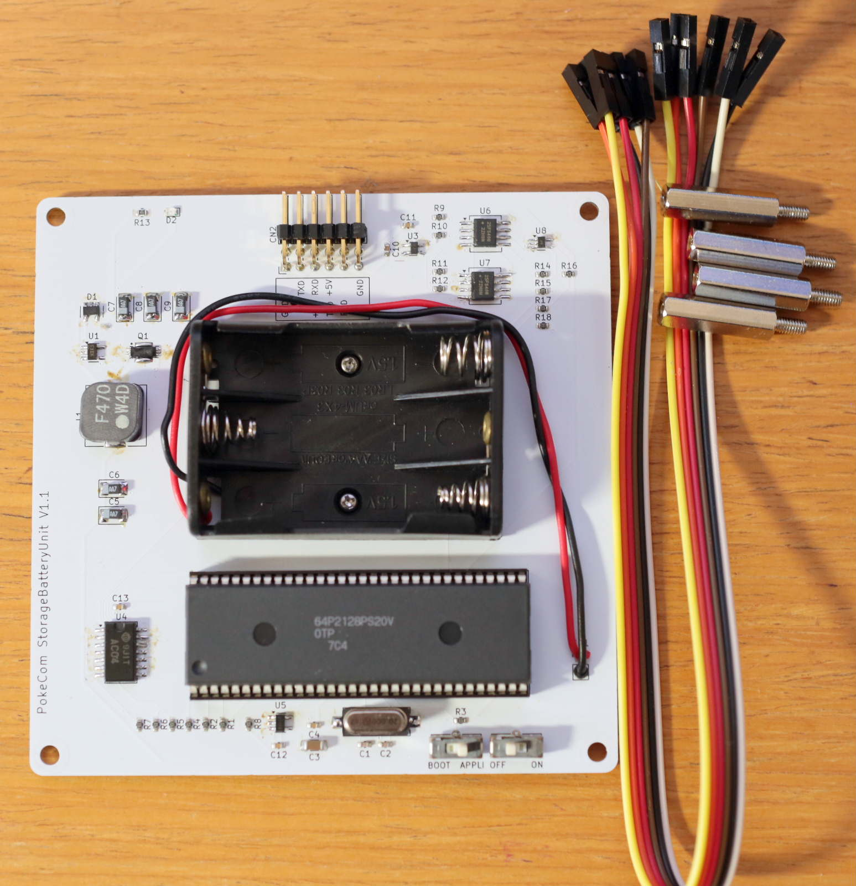
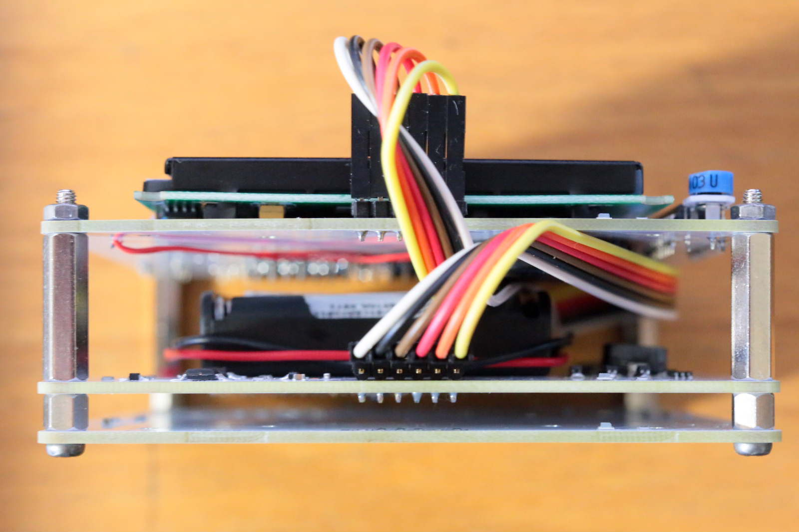
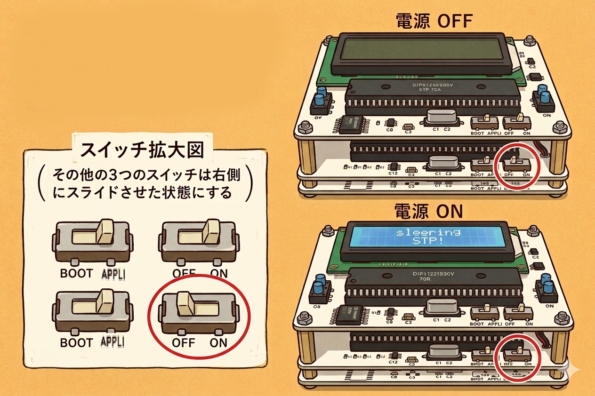
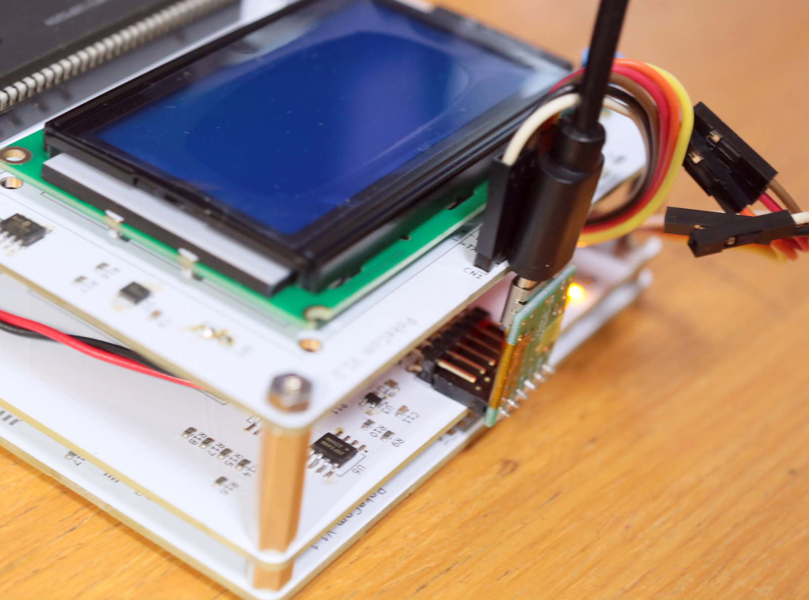
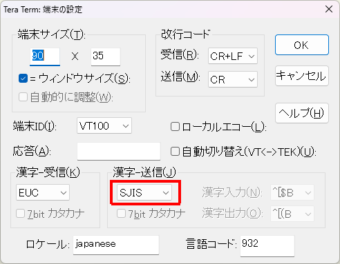
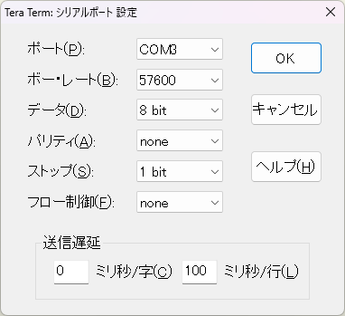
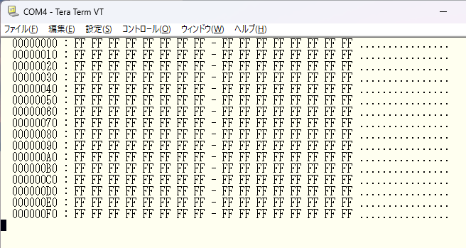
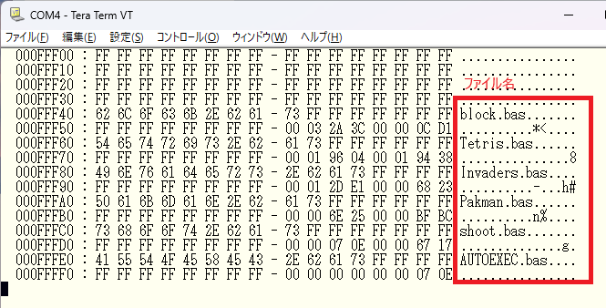

オートローダ
PocketComを持ち運ぶための、電源・ストレージ機能を備えた拡張ユニットです。
作品が完成すると、「誰かに遊んでもらいたい」「見てもらいたい」と思いますよね。
このユニットをPocketComに接続すれば、PCから取り外して単体で持ち運べるようになります。
作成したゲームやプログラムを、好きな場所で気軽に楽しめます。
さらに、右の動画のようにメニューから起動できるようにすれば、複数の作品をまとめて持ち運ぶことも可能です。
接続方法

キットには、左の写真にあるオートローダ基板、フラットケーブル、スペーサが同梱されています。
オートローダ基板にはサンプルプロジェクトが書き込み済みなので、PocketComと接続して起動するだけで動作確認できます。
まず、左図のようにフラットケーブルでPocketComとオートローダ基板を接続します。
接続時は、以下の点に注意してください。
・PocketComとオートローダ基板の6本のピンヘッダを左から1〜6番としたとき、同じ番号同士を接続する。
・オートローダ基板側は2段のピンヘッダになっていますが、上段（基板から離れた側）の6本を使用する。
・オートローダ基板の「ON・OFF」と書かれた電源スイッチをOFFにした状態で、電池ボックスに電池を入れる。

PocketCom（上側）とオートローダ基板（下側）を、スペーサで固定します。

左図の状態を参考に、オートローダの電源スイッチ以外のスイッチを右側へ倒してください。
その後、オートローダの電源スイッチをONにします。
PocketComのLCDにメニューが表示されれば正常です。
5秒以上待ってもメニューが表示されない場合は、接続やスイッチ設定が間違っている可能性があります。
一度電源をOFFにし、ケーブル接続や各スイッチの向きを確認してください。
プロジェクトファイル
プロジェクトファイルの構成は以下のようになっています。
・ファイルは「*** Project Start ****」で始まり、「*** Project End ****」で終了します。
・「@ファイル名」の行の後に、そのファイルの内容（BASICプログラム）を記述します。
・起動時に最初に実行されるプログラムは、「AUTOEXEC.bas」という名前で作成します。
・プログラムから別のプログラムを起動したい場合は、次に実行したいファイル名をPRINT文で出力して終了します。
例として、冒頭の動画で使用したプロジェクトファイルをご覧ください。
【プロジェクトファイルの構成イメージ】
*** Project Start ****
@AUTOEXEC.bas
（最初に実行するプログラム）
@ファイル名
（BASICプログラムの内容）
@ファイル名
（BASICプログラムの内容）
*** Project End ****

プロジェクトファイルの書き込み方


プロジェクトファイルの書き込みには、PocketComにプログラムを転送する時と同じ変換基板を使用します。
左の写真のように、ダウンローダ基板下側の6本のヘッダピンを使ってPCへ接続してください。
TeraTermの設定は下図の通りです。
赤枠の項目だけPocketCom使用時と設定が異なるので注意してください。
オートローダ接続時は、PocketComと異なりTeraTerm画面には何も表示されません。
また、キー入力のエコーバックもありません。そのため、画面表示がなくても入力されたものとして操作を進めます。
正常に接続できているか不安な場合は、「h⏎」と入力してください。
ヘルプが表示されれば正常に動作しています。
【プロジェクトファイル書き込み手順】
1）「EEPErase⏎」を入力
2）「EEPDump 0⏎」を入力
表示内容がすべて「FF」であれば消去成功です。
3）TeraTermのメニューから
「ファイル」→「ファイル送信(S)」を選択し、書き込むプロジェクトファイルを送信する。
4）「EEPDump fff00⏎」を入力
プロジェクトファイル内で指定したファイル名が表示されれば書き込み成功です。
【TeraTermの端末設定】

【TeraTermのシリアルポート設定】

【EEPDump 0 実行時の表示】

【EEPDump fff00 実行時の表示】

後は、接続を戻して、オートローダの電源を入れれば、プロジェクトファイルのAUTOEXEC.basが起動するはずです。
回路図
メニューに移動部品配置
メニューに移動